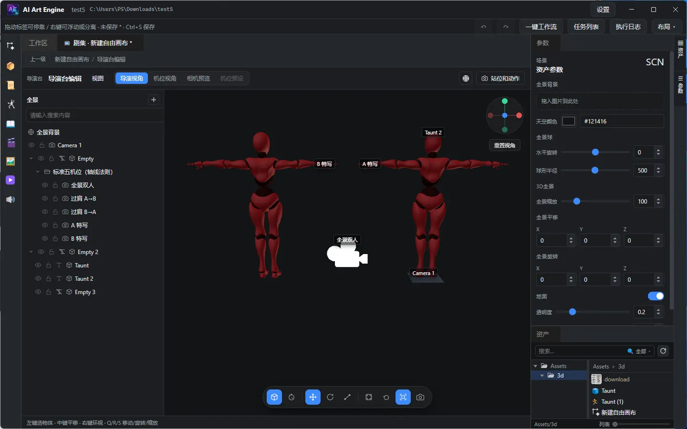

Manual · Production
剧本、成片与导演台
剧本与场资产，成片时间线的上轨编排、字幕与导出，画布与世界元素，以及 3D 导演台的站位、动画录制与高斯泼溅。
9. 剧本与场
9.1 剧本资产
通过节点图生成与编辑剧本内容。将结果连到「剧本输出」，并在参数面板选择合适的文本模型与指令。 可将剧本资产拖入其他图中作为上游。
9.2 场资产
- 场（beat）是旧版分镜的替代：以「场」为单元组织叙事，再拆分 / 生成为可生成镜头。
- 场拆解（分镜师·节拍拆解表）：从剧本按节拍拆出时间 / 空间 / 角色 / 动作 / 冲突 / 氛围等列。
- 场表格：批量查看 / 编辑拆解结果；支持新建与删除行，双击节点可打开表格窗口。
- 场生成 / 场参考：按场批量生成内容，或引用指定场继续加工；结合「剧集流水线」的 9宫格 / 4宫格分镜表与动态视频生成完成整条短剧链路。
9.3 分镜思维与指令预设
旧版的独立「分镜资产 / 镜头调度」已移除，分镜能力并入场与剧集流水线：由节拍拆解表负责拆场， 9宫格 / 4宫格分镜表负责把场落到可生成的镜头，画面与视频由生成节点完成。
- 镜头语言：英雄 / 神秘出场、双人中景、过肩反打、俯视、背面、荷兰角等。
- 身体朝向：全正面、45° 正面、纯侧面、45° 背面和严格背面。
- 人物表演：把愤怒、失神、疯癫、释然、焦虑、悲伤、自信与惊讶拆成面部、呼吸、肩颈、手指和重心动作。
- 打光：顶光、正侧光、伦勃朗光、体积光、逆光和画面内有动机光源。
- 广告运镜与转场：冲击硬切、闪白、运动匹配、短叠化、匹配剪辑、前景遮挡、虚焦揭示、跳切和产品英雄揭示。
视频与图片生成节点的指令预设（分镜师·节拍拆解表 / 9宫格分镜表 / 4宫格动态分镜表等）会把上面这些 镜头语言直接写入提示词；逐帧拉片节点可先从参考视频取关键帧，再用片段重拍做局部修改，详见 节点图章节。
10. 成片时间线
成片时间线用于把场 / 视频节点输出与导入素材拼成一条可预览、可导出的时间轴，通常挂在剧本资产上打开。
10.1 打开与布局
- 在剧本相关流程中打开成片时间线编辑器（左：素材库 · 中：预览 · 下：多轨时间线）。
- 轨道类型：视频 · 画中画 · 配音 · 字幕 · 音乐。
- 素材库顶部可刷新输入、自动上轨（按顺序把素材自动铺到轨道），并可调整素材显示大小。
10.2 左侧素材
- 节点输入：从上游节点收集的视频 / 声音，不可从列表删除（删轨道片段不影响列表）。
- 导入素材：从资产库或系统文件拖入时间线后出现在此；可删除，并同步清掉轨道上对应片段。
- 在导入区右键可新建分组，分组支持重命名与删除（删除后组内素材回到未分组）；将导入项拖入分组或拖回「未分组」。分组会随时间线文档保存。
- 视频素材图标使用首帧缩略图；声音素材显示通用声音图标。
10.3 上轨与编排
- 从列表拖到轨道放置；声音误拖到视频轨时会智能落到配音轨。也可用「自动上轨」一键铺开。
- 轨道上的片段可用指针左右拖动改时间，也可拖到其他轨道；双击片段可预览 / 定位。
- 片段操作：在播放头处分割、复制 / 粘贴（粘贴到播放头）、移除片段； 属性面板可精调开始时间 / 片段时长 / 音量，声音类片段支持淡入 / 淡出。
- 轨道管理：隐藏 / 显示、锁定 / 解锁、折叠 / 展开，拖动轨道边缘可调轨道高度； 「总时长」可设定时间线长度（不得短于素材内容）。时间线内有独立的撤销 / 重做。
- 字幕轨：可添加字幕并编辑文案。
10.4 播放
- 中间预览区播放：只播放当前选中的视频或声音片段（未选中媒体片段时按钮禁用）。
- 下方时间线工具栏播放：按整条时间线联播（视频序列 + 声音轨），支持回到起点、暂停、循环与速度设置。
10.5 画中画与转场
- 画中画叠加：将视频拖到预览叠加层可叠加为画中画；属性面板可调横向 / 纵向位置、宽度 / 高度、 不透明度 / 音量（可一键重置），预览框比例可按原始视频或导出比例显示，导出成片时同步合成。
- 转场：视频轨上两个片段重叠处出现蓝色手柄，拖动可调整重叠 / 转场时长； 入场 / 出场转场效果可选：叠化、淡入淡出、A 淡出 / B 淡入、闪白、左 / 右 / 上 / 下滑动、 左 / 右 / 上 / 下擦除、圆形打开 / 圆形关闭，导出时一并合成。
10.6 字幕
- 点击选中字幕片段，在属性面板编辑文案、字号、高度（纵向位置）、颜色与样式；选中后滚轮也可调整字号。
- 字幕与成片一并导出，也可单独导出字幕 SRT。
10.7 导出
时间线工具栏提供导出成片：可设分辨率（预设或自定义宽高）、帧率与码率，优先用本机 ffmpeg 合成 MP4，未安装时回退为 WebM 录制；导出进度与结果路径会提示在界面中。时间线缩放可用「适应宽度」。
11. 画布与世界元素
11.1 画布资产
- 自由画布：空白节点画布；右键添加节点，或从资产库拖入资产。多次新建会得到「自由画布 2」等名称。在画布上搭视频生成与参考视频，见 自由画布：视频生成与参考视频。
11.2 世界元素 / 场
- 表格视图：世界元素为角色 / 场景 / 道具 / 武器；场表为时间 / 空间 / 角色 / 动作 / 冲突 / 氛围等列；支持新建与删除行。
- 双击对应节点：打开提取 / 拆解指令、表格或编辑窗口。
12. 导演台

导演台用于 3D 场景摆姿、机位、动画预览与录制。节点链路一般为「导演台编辑 →（可选）选取 / 下游生成」。编辑节点提供两个方形输出口（站位图与动作视频），并提供两类输入端口： 3D 模型输入端口——连入 3D 模型生成结果后，dive 进入舞台会自动实例化到场景； 全景图输入端口——连入全景图后，dive 时自动设为舞台背景。
12.1 从节点打开
- 在节点图中双击「导演台编辑」节点，打开舞台窗口。
-
关闭舞台或同步后，结果写入节点：
out-shots（站位截图，images）与out-actions（动作录制，videos）。 - 在节点 Inspector 中可预览站位缩略图与动作视频（双击进入媒体预览）。
12.2 舞台视口操作
- 左键选择 · 中键平移 · 按住右键进入飞行浏览：W/A/S/D 移动，Q/E 降 / 升，Shift 加速，移动鼠标转向。
- Q / R / S：移动 / 旋转 / 缩放工具。
- 视口底部工具栏：全景模式 / 动画模式切换、比例（Auto 跟随视口尺寸，或固定 21:9 / 16:9 / 4:3 / 1:1 / 3:4 / 9:16，影响预览与截屏画幅）、选中包围盒开关、 截屏与重置视角。
12.3 侧栏与对象
- 左侧场景列表：层级、搜索、创建相机 / 空物体 / 基础几何体（Cube、Sphere、圆柱、尖拱、圆环、平面等 20 余种）；拖动右缘可调整列表宽度（会记住本地设置）。
- AI 白模：提供透视 / 360 全景参考图（最多 3 张）与指令，由文本模型按基础几何体自动搭建场景白模， 适合快速落地透视与空间布局。
- 对象：删除、隐藏、显示名称、锁定；支持拖拽改父子关系，层级列表支持多选批量删除与多选拖拽改父级（整组移动并保留世界变换）；机位组可整组删除（连同预设相机，可撤销）。
- 属性 · 姿势（FK / IK、AI 姿势——自然语言生成骨骼旋转、常用姿势预设）· 材质贴图覆盖：可为物体替换基础贴图 / 法线贴图，支持移除、隐藏贴图槽或一键还原模型自带贴图。
12.4 站位和动作
标题栏「站位和动作」打开面板，内含两个分类：
- 站位：视口截屏历史。用工具栏相机按钮截取；双击缩略图可预览。
-
动作：动画模式录制的视频历史。录制成功后自动写入工程
Cache/Videos/（无需另选目录），并打开动作分类。
12.5 视图与全景
- 导演视角 / 机位切换；六向视图；重置。
- 着色模式：标题栏右侧着色模式菜单，可选 着色 / 线框 / 着色线框（实体叠加线框），便于检查模型布线与穿插遮挡； 选择会记住本地设置，默认着色。
- Gizmos 显示：标题栏右侧 Gizmos 菜单可调 Gizmos 大小，并开关场景文字、相机 Gizmos、网格、选中包围盒；「截屏 / 视频包含场景文字 / 相机名称」决定站位截图与动作录制是否叠加这些标注。
- 移动到视图：Ctrl+Alt+F；与视图对齐：Ctrl+Shift+F。
- 全景：拖入背景图，调节缩放 / 平移 / 旋转、地面与天空色。
- 也可把全景图连到导演台节点的全景输入端口（单图），dive 进入舞台时自动设为背景，无需手动拖入。
12.6 动画模式与录制
- 在全景模式 / 动画模式间切换。
- 轨迹与关键帧：K 添加关键帧；Delete 删除关键帧；Space 播放 / 暂停。
- 动画面板红色圆点按钮为录制动作：按当前动画内容录成 WebM，自动保存到缓存目录并进入「动作」列表。
12.7 高斯泼溅（.spz / .ply）
泼溅是空间世界那条链路的产物，也能当模型资产直接进舞台渲染、摆位、参与站位图与动作录制：
-
取两种来源：空间世界生成随世界自动落盘的
*.spz（免费，推荐）；或 「空间世界导出」节点同步转出的*.ply（单独计费，落在世界 GLB 旁边同名文件）。 PLY 不登记资产，要用它的相对路径可直接连导演台的 3D 模型输入口，或先导入资产库。 - 进舞台的两种方式与其他模型一致：把泼溅模型资产拖到舞台视口，或接入导演台节点的 3D 模型输入端口（dive 进入舞台时自动实例化）。
- 渲染由内置的 Spark 承担：泼溅网格是场景层级里的普通对象，可选中、可拖动 / 旋转 / 缩放、可挂父子、可显隐、可改显示名——与 GLB 角色走同一套变换工具与包围盒框。 资产检查器的 3D 预览与资产卡缩略图同样能渲染泼溅。
- 空间世界导出节点的检查器里同样有 3D 预览窗与产物区：导出 HQ 网格 / PLY 泼溅后可以直接转着看，产物区里也会列出世界自带的高斯泼溅（SPZ）与 360 全景图。
- 「骨骼」页签对泼溅没有意义：没有骨骼，也不参与动画重定向，动画面板不会为它列出骨骼片段， 骨骼列表为空属正常。
- 泼溅网格按需加载：预览 / 舞台里没有泼溅时不会加载这套渲染器；泼溅是异步读入的， 刚进舞台时可能还看不到，等一会儿即出现。
可以做什么
- 整体变换、显隐、改名、改父级、锁定，与普通对象完全一致。
- 属性里的颜色对该物体是整体染色（改变泼溅本身色相），不像普通模型那样只换材质底色。
- 站位截图与动作录制照常把它渲染进画面。
不能做什么（泼溅没有三角网格与材质贴图，以下工具对它无效）
- 姿势与骨骼动画：没有骨骼，也不参与动画重定向，动画面板不会为它列出骨骼片段。
- 材质贴图覆盖：不会出现可替换的贴图槽。
- 着色模式里的线框 / 着色线框：泼溅始终按自身方式着色。